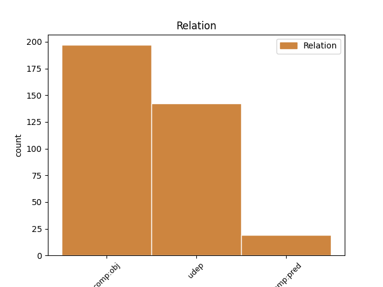
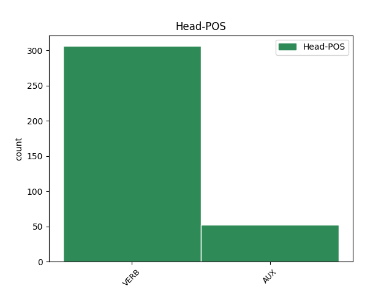

Distribution of features within this leaf


Agreement Rules sorted by frequency.
- When the dependent token is the underspecified dependency(udep) of the head token, and the dependent token is PRON.
1 Hänen _ _ _ _ 0 _ _ _
2 mukaansa _ _ _ _ 0 _ _ _
3 mies _ _ _ _ 0 _ _ _
4 oli _ _ _ _ 0 _ _ _
5 menossa _ _ _ _ 0 _ _ _
6 tapaamaan _ _ _ _ 0 _ _ _
7 ystäväänsä _ _ _ _ 0 _ _ _
8 ja _ _ _ _ 0 _ _ _
9 soittaisi soittaa VERB V Mood=Cnd|Number=Sing|Person=3|VerbForm=Fin|Voice=Act 0 _ _ _
10 hänelle hän PRON Pron Case=All|Number=Sing|Person=3|PronType=Prs 9 udep _ _
11 myöhemmin _ _ _ _ 0 _ _ _
12 . _ _ _ _ 0 _ _ _
1 Lapset _ _ _ _ 0 _ _ _
2 toivoivat _ _ _ _ 0 _ _ _
3 , _ _ _ _ 0 _ _ _
4 että _ _ _ _ 0 _ _ _
5 hoitajat _ _ _ _ 0 _ _ _
6 auttavat _ _ _ _ 0 _ _ _
7 , _ _ _ _ 0 _ _ _
8 kuuntelevat _ _ _ _ 0 _ _ _
9 , _ _ _ _ 0 _ _ _
10 tekevät _ _ _ _ 0 _ _ _
11 toimenpiteitä _ _ _ _ 0 _ _ _
12 ja _ _ _ _ 0 _ _ _
13 selittävät selittää VERB V Mood=Ind|Number=Plur|Person=3|Tense=Pres|VerbForm=Fin|Voice=Act 0 _ _ _
14 , _ _ _ _ 0 _ _ _
15 mitä _ _ _ _ 0 _ _ _
16 sairaalassa _ _ _ _ 0 _ _ _
17 tapahtuu tapahtua VERB V Mood=Ind|Number=Sing|Person=3|Tense=Pres|VerbForm=Fin|Voice=Act 13 comp:obj _ SpaceAfter=No
18 . _ _ _ _ 0 _ _ _
1 Rattijuopumustuomiot _ _ _ _ 0 _ _ _
2 kävivät _ _ _ _ 0 _ _ _
3 ilmi _ _ _ _ 0 _ _ _
4 kun _ _ _ _ 0 _ _ _
5 hän _ _ _ _ 0 _ _ _
6 oli _ _ _ _ 0 _ _ _
7 kesällä _ _ _ _ 0 _ _ _
8 palaamassa _ _ _ _ 0 _ _ _
9 Hollannissa _ _ _ _ 0 _ _ _
10 pidetystä _ _ _ _ 0 _ _ _
11 Wikimedia-säätiön _ _ _ _ 0 _ _ _
12 kokouksesta _ _ _ _ 0 _ _ _
13 ja _ _ _ _ 0 _ _ _
14 Floridan _ _ _ _ 0 _ _ _
15 tulli _ _ _ _ 0 _ _ _
16 otti ottaa VERB V Mood=Ind|Number=Sing|Person=3|Tense=Past|VerbForm=Fin|Voice=Act 0 _ _ _
17 hänet hän PRON Pron Case=Acc|Number=Sing|Person=3|PronType=Prs 16 comp:obj _ _
18 kiinni _ _ _ _ 0 _ _ _
19 kuulusteltavaksi _ _ _ _ 0 _ _ _
20 , _ _ _ _ 0 _ _ _
21 koska _ _ _ _ 0 _ _ _
22 hän _ _ _ _ 0 _ _ _
23 oli _ _ _ _ 0 _ _ _
24 jättänyt _ _ _ _ 0 _ _ _
25 menemättä _ _ _ _ 0 _ _ _
26 sovittuun _ _ _ _ 0 _ _ _
27 tapaamiseen _ _ _ _ 0 _ _ _
28 ehdonalaisvalvojansa _ _ _ _ 0 _ _ _
29 kanssa _ _ _ _ 0 _ _ _
30 . _ _ _ _ 0 _ _ _
1 Tutkintonimikkeet _ _ _ _ 0 _ _ _
2 kertovat kertoa VERB V Mood=Ind|Number=Plur|Person=3|Tense=Pres|VerbForm=Fin|Voice=Act 0 _ _ _
3 , _ _ _ _ 0 _ _ _
4 millaisen _ _ _ _ 0 _ _ _
5 ammatillisen _ _ _ _ 0 _ _ _
6 koulutuksen _ _ _ _ 0 _ _ _
7 isännöitsijä _ _ _ _ 0 _ _ _
8 on olla AUX V Mood=Ind|Number=Sing|Person=3|Tense=Pres|VerbForm=Fin|Voice=Act 2 comp:obj _ _
9 suorittanut _ _ _ _ 0 _ _ _
10 . _ _ _ _ 0 _ _ _
1 Vaalituloksien _ _ _ _ 0 _ _ _
2 perusteella _ _ _ _ 0 _ _ _
3 myös _ _ _ _ 0 _ _ _
4 Keskusta _ _ _ _ 0 _ _ _
5 menetti _ _ _ _ 0 _ _ _
6 neljä _ _ _ _ 0 _ _ _
7 paikkaa _ _ _ _ 0 _ _ _
8 , _ _ _ _ 0 _ _ _
9 mutta _ _ _ _ 0 _ _ _
10 sen _ _ _ _ 0 _ _ _
11 onnistui onnistua VERB V Mood=Ind|Number=Sing|Person=3|Tense=Past|VerbForm=Fin|Voice=Act 0 _ _ _
12 silti _ _ _ _ 0 _ _ _
13 neuvotteluissa _ _ _ _ 0 _ _ _
14 muodostaa muodostaa VERB V Mood=Ind|Number=Sing|Person=3|Tense=Pres|VerbForm=Fin|Voice=Act 11 comp:pred _ _
15 hallitus _ _ _ _ 0 _ _ _
16 yhdessä _ _ _ _ 0 _ _ _
17 Kokoomuksen _ _ _ _ 0 _ _ _
18 kanssa _ _ _ _ 0 _ _ _
19 ja _ _ _ _ 0 _ _ _
20 saada _ _ _ _ 0 _ _ _
21 pääministerin _ _ _ _ 0 _ _ _
22 virka _ _ _ _ 0 _ _ _
23 puolueen _ _ _ _ 0 _ _ _
24 puheenjohtajalle _ _ _ _ 0 _ _ _
25 Matti _ _ _ _ 0 _ _ _
26 Vanhaselle _ _ _ _ 0 _ _ _
27 . _ _ _ _ 0 _ _ _
1 Large _ _ _ _ 0 _ _ _
2 Hadron _ _ _ _ 0 _ _ _
3 Colliderin _ _ _ _ 0 _ _ _
4 on olla AUX V Mood=Ind|Number=Sing|Person=3|Tense=Pres|VerbForm=Fin|Voice=Act 0 _ _ _
5 tarkoituksena _ _ _ _ 0 _ _ _
6 on olla AUX V Mood=Ind|Number=Sing|Person=3|Tense=Pres|VerbForm=Fin|Voice=Act 4 comp:pred _ _
7 selvittää _ _ _ _ 0 _ _ _
8 muun _ _ _ _ 0 _ _ _
9 muassa _ _ _ _ 0 _ _ _
10 materian _ _ _ _ 0 _ _ _
11 alkuperä _ _ _ _ 0 _ _ _
12 ja _ _ _ _ 0 _ _ _
13 kuinka _ _ _ _ 0 _ _ _
14 maailmankaikkeus _ _ _ _ 0 _ _ _
15 syntyi _ _ _ _ 0 _ _ _
16 . _ _ _ _ 0 _ _ _
1 Suomalaisten _ _ _ _ 0 _ _ _
2 toivomus _ _ _ _ 0 _ _ _
3 oli _ _ _ _ 0 _ _ _
4 , _ _ _ _ 0 _ _ _
5 että _ _ _ _ 0 _ _ _
6 valtiopäivät _ _ _ _ 0 _ _ _
7 saisivat _ _ _ _ 0 _ _ _
8 suhteessa _ _ _ _ 0 _ _ _
9 keisariin _ _ _ _ 0 _ _ _
10 itsenäistä _ _ _ _ 0 _ _ _
11 päätösvaltaa _ _ _ _ 0 _ _ _
12 , _ _ _ _ 0 _ _ _
13 mutta _ _ _ _ 0 _ _ _
14 tämä _ _ _ _ 0 _ _ _
15 toivomus _ _ _ _ 0 _ _ _
16 ei ei AUX V Number=Sing|Person=3|Polarity=Neg|VerbForm=Fin|Voice=Act 0 _ _ _
17 toteutunut _ _ _ _ 0 _ _ _
18 , _ _ _ _ 0 _ _ _
19 ei ei AUX V Number=Sing|Person=3|Polarity=Neg|VerbForm=Fin|Voice=Act 16 udep _ _
20 edes _ _ _ _ 0 _ _ _
21 keisarin _ _ _ _ 0 _ _ _
22 lupaamaan _ _ _ _ 0 _ _ _
23 aloiteoikeuden _ _ _ _ 0 _ _ _
24 osalta _ _ _ _ 0 _ _ _
25 , _ _ _ _ 0 _ _ _
26 vaan _ _ _ _ 0 _ _ _
27 valtiopäiväasiat _ _ _ _ 0 _ _ _
28 kiersivät _ _ _ _ 0 _ _ _
29 senaatin _ _ _ _ 0 _ _ _
30 ja _ _ _ _ 0 _ _ _
31 kenraalikuvernöörin _ _ _ _ 0 _ _ _
32 kautta _ _ _ _ 0 _ _ _
33 keisarin _ _ _ _ 0 _ _ _
34 hyväksyttäviksi _ _ _ _ 0 _ _ _
35 , _ _ _ _ 0 _ _ _
36 tosin _ _ _ _ 0 _ _ _
37 vuoteen _ _ _ _ 0 _ _ _
38 1898 _ _ _ _ 0 _ _ _
39 saakka _ _ _ _ 0 _ _ _
40 keisari _ _ _ _ 0 _ _ _
41 vahvisti _ _ _ _ 0 _ _ _
42 jokaisen _ _ _ _ 0 _ _ _
43 lain _ _ _ _ 0 _ _ _
44 siinä _ _ _ _ 0 _ _ _
45 muodossa _ _ _ _ 0 _ _ _
46 kuin _ _ _ _ 0 _ _ _
47 valtiopäivät _ _ _ _ 0 _ _ _
48 sen _ _ _ _ 0 _ _ _
49 päättivät _ _ _ _ 0 _ _ _
50 . _ _ _ _ 0 _ _ _
1 Hänessä hän PRON Pron Case=Ine|Number=Sing|Person=3|PronType=Prs 2 comp:pred _ _
2 on olla AUX V Mood=Ind|Number=Sing|Person=3|Tense=Pres|VerbForm=Fin|Voice=Act 0 _ _ _
3 jotain _ _ _ _ 0 _ _ _
4 outoa _ _ _ _ 0 _ _ _
5 . _ _ _ _ 0 _ _ _
Disagree Examples:
1 Vähän _ _ _ _ 0 _ _ _
2 samanlainen _ _ _ _ 0 _ _ _
3 tunne _ _ _ _ 0 _ _ _
4 kuin _ _ _ _ 0 _ _ _
5 silloin _ _ _ _ 0 _ _ _
6 , _ _ _ _ 0 _ _ _
7 kun _ _ _ _ 0 _ _ _
8 ystävämme _ _ _ _ 0 _ _ _
9 vei viedä VERB V Mood=Ind|Number=Sing|Person=3|Tense=Past|VerbForm=Fin|Voice=Act 0 _ _ _
10 meidät minä PRON Pron Case=Acc|Number=Plur|Person=1|PronType=Prs 9 comp:obj _ _
11 kerran _ _ _ _ 0 _ _ _
12 ylös _ _ _ _ 0 _ _ _
13 tuomiokirkon _ _ _ _ 0 _ _ _
14 torniin _ _ _ _ 0 _ _ _
15 . _ _ _ _ 0 _ _ _
1 Vaikka _ _ _ _ 0 _ _ _
2 tiesi tietää VERB V Mood=Ind|Number=Sing|Person=0|Tense=Past|VerbForm=Fin|Voice=Act 0 _ _ _
3 , _ _ _ _ 0 _ _ _
4 millainen _ _ _ _ 0 _ _ _
5 Turku _ _ _ _ 0 _ _ _
6 on olla AUX V Mood=Ind|Number=Sing|Person=3|Tense=Pres|VerbForm=Fin|Voice=Act 2 comp:obj _ _
7 kartalla _ _ _ _ 0 _ _ _
8 , _ _ _ _ 0 _ _ _
9 se _ _ _ _ 0 _ _ _
10 hämmästytti _ _ _ _ 0 _ _ _
11 siltikin _ _ _ _ 0 _ _ _
12 . _ _ _ _ 0 _ _ _
1 Tuomiokirkko _ _ _ _ 0 _ _ _
2 rakennuksena _ _ _ _ 0 _ _ _
3 tekee tehdä VERB V Mood=Ind|Number=Sing|Person=3|Tense=Pres|VerbForm=Fin|Voice=Act 0 _ _ _
4 minuun minä PRON Pron Case=Ill|Number=Sing|Person=1|PronType=Prs 3 udep _ _
5 aina _ _ _ _ 0 _ _ _
6 suuren _ _ _ _ 0 _ _ _
7 vaikutuksen _ _ _ _ 0 _ _ _
8 . _ _ _ _ 0 _ _ _
1 Hän _ _ _ _ 0 _ _ _
2 huolestuneena _ _ _ _ 0 _ _ _
3 tiedusteli tiedustella VERB V Mood=Ind|Number=Sing|Person=3|Tense=Past|VerbForm=Fin|Voice=Act 0 _ _ _
4 , _ _ _ _ 0 _ _ _
5 mahtaisimmeko mahtaa AUX V Clitic=Ko|Mood=Cnd|Number=Plur|Person=1|VerbForm=Fin|Voice=Act 3 comp:obj _ _
6 jaksaa _ _ _ _ 0 _ _ _
7 majoittaa _ _ _ _ 0 _ _ _
8 heitä _ _ _ _ 0 _ _ _
9 niin _ _ _ _ 0 _ _ _
10 usein _ _ _ _ 0 _ _ _
11 . _ _ _ _ 0 _ _ _
1 Mietin miettiä VERB V Mood=Ind|Number=Sing|Person=1|Tense=Past|VerbForm=Fin|Voice=Act 0 _ _ _
2 , _ _ _ _ 0 _ _ _
3 jaksaako jaksaa VERB V Clitic=Ko|Mood=Ind|Number=Sing|Person=0|Tense=Pres|VerbForm=Fin|Voice=Act 1 comp:obj _ _
4 vanhuksia _ _ _ _ 0 _ _ _
5 ihan _ _ _ _ 0 _ _ _
6 oikeasti _ _ _ _ 0 _ _ _
7 meidän _ _ _ _ 0 _ _ _
8 pienessä _ _ _ _ 0 _ _ _
9 kämpässä _ _ _ _ 0 _ _ _
10 , _ _ _ _ 0 _ _ _
11 varsinkin _ _ _ _ 0 _ _ _
12 jos _ _ _ _ 0 _ _ _
13 tutkimusjakso _ _ _ _ 0 _ _ _
14 on _ _ _ _ 0 _ _ _
15 useita _ _ _ _ 0 _ _ _
16 päiviä _ _ _ _ 0 _ _ _
17 kerrallaan _ _ _ _ 0 _ _ _
18 . _ _ _ _ 0 _ _ _